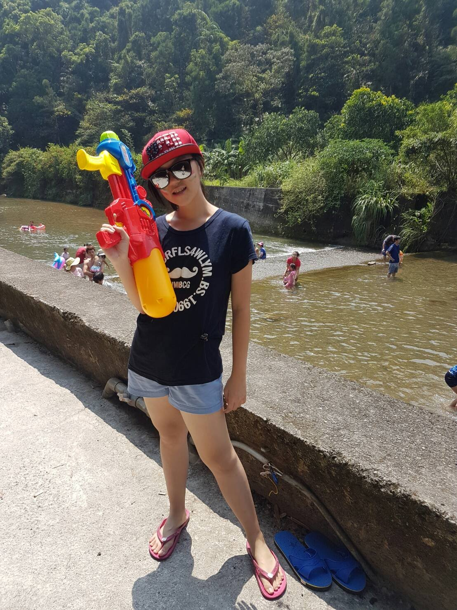
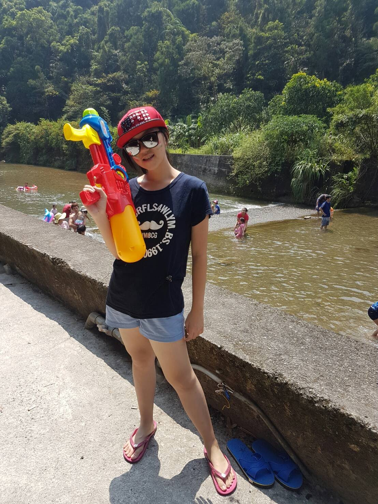
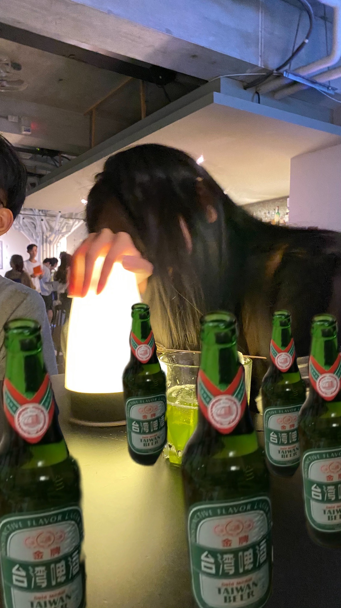
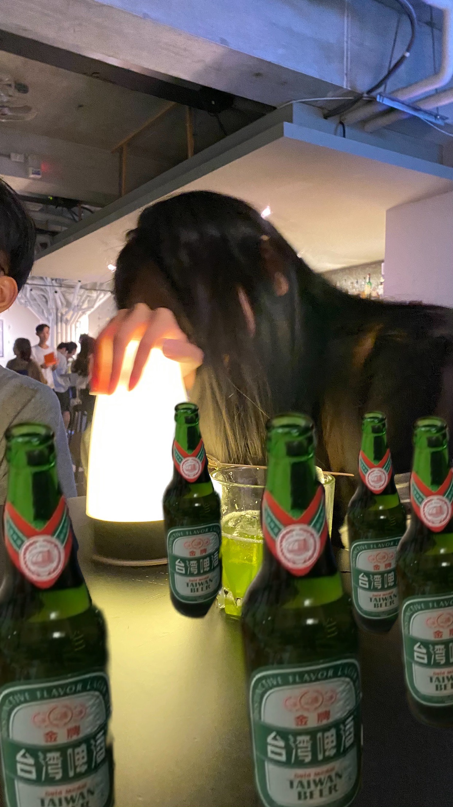

Up Helly Aa Fire Festival in Shetland
For 24 hours on the last Tuesday of January Lerwick is the location of Shetland's biggest annual fire festival.Up Helly Aa is a type of fire festival held annually from January to March in various communities in Shetland, Scotland to mark the end of the Yule season. Each festival involves a torchlit procession by squads of costumed participants (known as guizers) that culminates in the burning of an imitation Viking galley. The largest festival held in Lerwick, Shetland's capital, involves a procession of up to a thousand guizers who march through the streets of Lerwick on the last Tuesday in January. The other rural festivals (known as the 'country' Up Helly Aas) see lower numbers of participants in accordance with their lower populations.

Songkran Festival in Thailand
Songkran is Thailand's most famous festival. An important event on the Buddhist calendar, this water festival marks the beginning of the traditional Thai New Year. The name Songkran comes from a Sanskrit word meaning 'passing' or 'approaching'. Songkran is on 13 April every year, but the holiday period extends from 14 to 15 April.
Water is an important element of Songkran, especially in more recent times when the throwing of water has become a huge part of the annual celebrations. If you're visiting Thailand during this period, prepare to get splashed!
 

Tomorrowland in Belgium
Once upon a time, Tomorrowland was just a music festival. It's hard to imagine it now, but early editions didn't have the all-encompassing themes and engrossing mythology that help to shape the whole experience.
Nowadays though, the annual theme is a huge part of the magic, dictating the incredible MainStage design, the immersive production and more or less everything that isn't the lineup of dance music megastars.
The globally adored festival celebrated its 15th Anniversary in 2019, and with the new season fast approaching we've decided to look back over all the themes since the festival's inception.
MORE Information HERE!!!

Mid-autumn festival in Taiwan
The Mid-Autumn Festival, also known as the Moon Festival, is a holiday for families to get together and enjoy each other's company.Held on the 15th day of the eighth month of the lunar calendar, the Moon Festival will fall on a Tuesday (Sept. 21) this year. On this day, people in Taiwan eat moon cakes, which symbolize unity and togetherness; stroll under the full moon; grill food on the barbecue; and eat pomelos, since the Chinese term for pomelo sounds like "care and protection."The most familiar myth related to the festival is that of Chang-e flying to the moon after secretly drinking her husband's elixir of life. Aside from this, there are also tales of the Jade Rabbit and of Wu Gang chopping down the cassia tree.

Oktoberfest (Beer festival) in Germany
Oktoberfest, annual festival in Munich, Germany, held over a two-week period and ending on the first Sunday in October. The festival originated on October 12, 1810, in celebration of the marriage of the crown prince of Bavaria, who later became King Louis I, to Princess Therese von Sachsen-Hildburghausen. The festival concluded five days later with a horse race held in an open area that came to be called Theresienwiese ("Therese's green").
 

Dia de los Muertos (Day of the dead) in Mexico
The Day of the Dead is a holiday traditionally celebrated on November 1 and 2, though other days, such as October 31 or November 6, may be included depending on the locality.The multi-day holiday involves family and friends gathering to pay respects and to remember friends and family members who have died. These celebrations can take a humorous tone, as celebrants remember funny events and anecdotes about the departed. In 2008, the tradition was inscribed in the Representative List of the Intangible Cultural Heritage of Humanity by UNESCO.

Holi Festival in India
Holi is a popular ancient Indian festival, also known as the "Festival of Love", the "Festival of Colours" and the "Festival of Spring".It originated and is predominantly celebrated in India and Nepal but has also spread to other regions of Asia and parts of the Western world through the diaspora from the Indian subcontinent.Holi celebrates the arrival of spring, the end of winter, the blossoming of love and for many, it is a festive day to meet others, play and laugh, forget and forgive, and repair broken relationships. The festival also celebrates the beginning of a good spring harvest season.